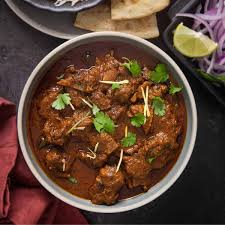

Pressure Cooker Goat Curry

Tantalizing Instant Pot goat curry. Using an electric pressure cooker cuts down on the cooking
time while still rendering tender meat. Serve over jasmine rice or with naan.
What is Pressure Cooker Goat Curry
Pressure Cooker Goat Curry is a classic Indian curry dish made by cooking goat meat in a pressure cooker.
The end result is a hearty, flavorful curry with tender chunks of goat meat in a thick, spiced sauce.
It is typically served with basmati rice or Indian flatbreads like naan or roti. Pressure Cooker Goat
Curry is a popular dish in many parts of India as well as Pakistani and Bangladeshi cuisines.
Ingredients
-
¼ cup vegetable oil, divided
-
2 large onion, thinly sliced
-
2 large tomatoes, peeled and diced
-
2 tablespoons garlic paste
-
1 tablespoon ginger paste
-
2½ pounds goat meat, cubed
-
1 cup water
-
1 potato, cubed
-
1 large carrot, sliced
-
2 teaspoons garam masala
-
2 teaspoon ground coriander
-
1 teaspoon ground cumin
-
½ teaspoon ground turmeric
-
2 teaspoons salt, or to taste
-
½ ground red chile pepper
Steps
-
Heat 2 tablespoons oil in an electric pressure cooker on the "Sear" setting.
Add onions; cook and stir until golden brown, 10 to 15 minutes.
-
Transfer onions to a food processor; grind into a paste. Remove to a bowl.
-
Combine tomatoes, garlic paste, and ginger paste
in the food processor; process until smooth.
-
Heat remaining 2 tablespoons oil in the pressure cooker using the "Sear" setting.
Add onion paste; cook, stirring constantly, until browned, about 2 minutes.
Stir in the tomato mixture.
-
Add goat meat, water, potato, carrot, garam masala, coriander, cumin, turmeric,
salt, and red chile pepper.
-
Close pressure cooker and seal according to manufacturer's instructions.
Set the timer for 50 minutes at high pressure. Release pressure using the
natural-release method according to manufacturer's instructions.